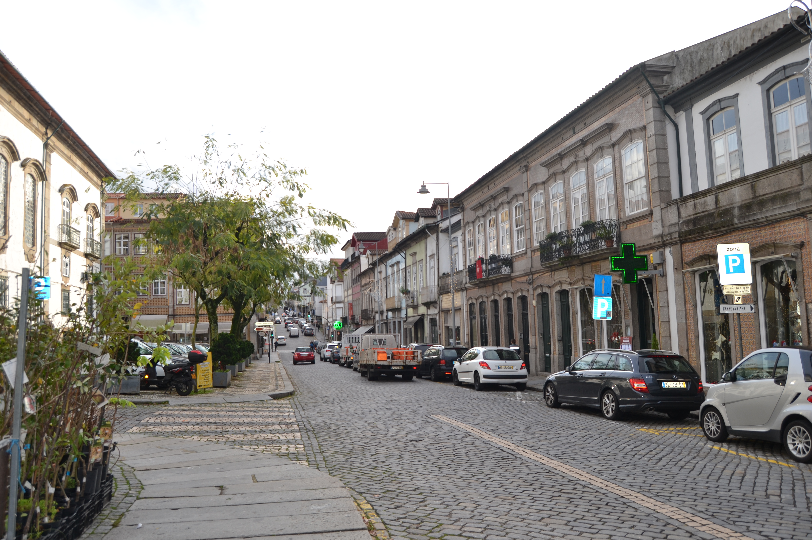

Rua do Campo

Legenda:Rua do Campo - vista nascente.

Legenda:Rua do Campo - vista poente.

Legenda:Rua Atual
Legenda:Rua Atual
Descrição: Pequena rua, entre a rua Nova e a Porta de S. Francisco, existente ja na Idade Media, entao com o nome de rua Nova. Actualmente toda esta rua tem feição diferente: a porta de S. Francisco foi demolida em data que desconhecemos e a parte central do lado Nascente
foi destruida em 1754 para aí se construir o novo edificio da Camara Municipal (so concluido em 1865) que ficou com a fachada traseira para esta rua.
O lado Sul foi integralmente perdido no final da decada de oitenta do seculo passado, quando se fez o alargamento e rectificação do traçado desta artéria. Se, na Idade Media, esta rua teve, possivelmente, grande importância (tinha uma porta num dos seus extremos, dava imediato acesso a saída de Braga para Prado,
Ponte de Lima e Valença, atraves da rua da Conega), no sec. XVIII, o seu peso deve ter decaído bastante. A designagao de Campo podera datar talvez do primeiro
quartel do sec. XVI, quando passou a estar em ligação com o campo da Vinha, então aberto. Das 10 casas do lado Nascente e 14 do Poente, apenas três deste lado
pertenciam ao Cabido. A rua do Campo é um troço da actual rua D. Frei Caetano Brandao, entre a rua D. Diogo de Sousa e o largo Conselheiro Torres e Almeida,
tendo recebido esta designação na sessão da Câmara de 28.07.1890.
Lista de Casas
Número: 1, Enfiteuta: Domingos Dias,Foro: 620 reis e galinhas, Descrição: Desde o ano de 1719 que os nº 1 e 2 se encontravam unidos. A frontaria que dá para a Rua Nova de Sousa corresponde ao nº15 da dita rua e é foreira à comenda de São Pedro de Merelim.
Número: 2, Enfiteuta: Domingos Dias,Foro: 270 reis e 2 galinhas, Descrição: Desde o ano de 1719 que os nº 1 e 2 se encontravam unidos. A frontaria que dá para a Rua Nova de Sousa corresponde ao nº15 da dita rua e é foreira à comenda de São Pedro de Merelim.
Número: 3, Enfiteuta: Os herdeiros do Padre Domingos Tinoco,Foro: 150 reis e 2 galinhas, Descrição: Confronta, de Sul, com parte da mesma casa foreira à Confraria da Trindade, antiga Confraria da Companhia de Jesus e, de Norte, com casa dízima a Deus